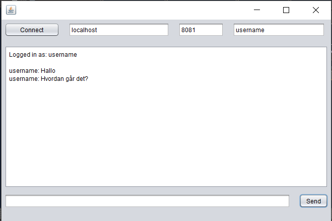
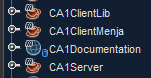

How to use the system

- Start først Serveren med denne kommando: java -jar serverjarfilnavnet.jar 0.0.0.0 &
- I localhost-feltet skrives den ip-addresse eller det domænenavn man ønsker at connecte til
- Udfyld username-feltet med det ønskede brugernavn
- Tryk på connect-knappen
- Du er nu klar til at chatte
For at køre programmet i Netbeans
Clone projektet fra GitHub
Følgende Maven Applikations Projekter er nødvendige:

- Start først Serveren fra Maven Projektet: CA1Server
- Kør derefter Klienten fra Maven Projektet: CA1ClientMenja